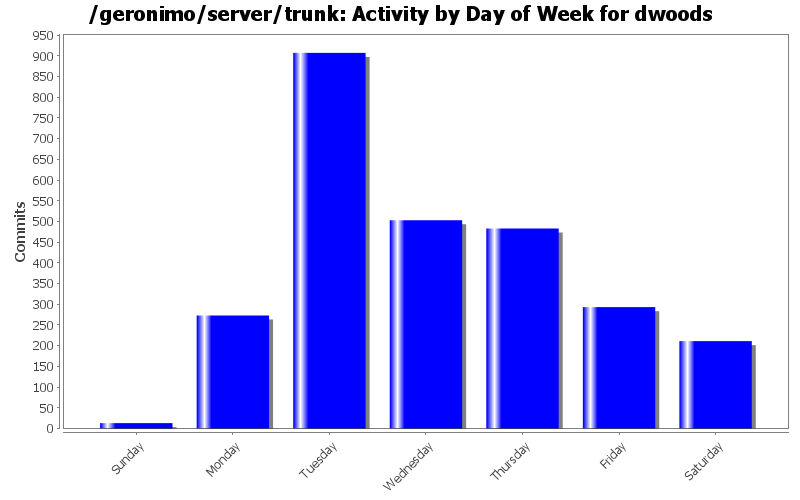
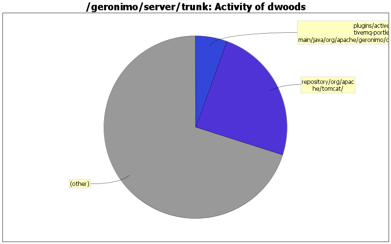

upgrade to released OpenJPA 2.0.1
1 lines of code changed in 1 file:
upgrade to Apache BVal 0.2-incubating release
1 lines of code changed in 1 file:
workaround to get the BVAL TCK working on the Tocmat assembly again. now, it's back to the previous results of only 1 failure.
5 lines of code changed in 1 file:
upgrade commons-pool from 1.5.3 to 1.5.4 to match latest level used in OpenJPA trunk
1 lines of code changed in 1 file:
upgrade to released Jetty 8.0.0.M1 until M2-SNAPSHOT is available
2 lines of code changed in 1 file:
move derby-embed-local to system-database, as several other plugins depend on system-database to provide it
31 lines of code changed in 5 files:
add in new web profile assemblies
17 lines of code changed in 1 file:
add web profile assemblies and commented out examples of EBA assemblies to replace minimal assemblies
166 lines of code changed in 5 files:
create initial Java EE 6 Web Profile plugin groups. Note: this is a subset of the full javaee groups, which do not use these, as we need to figure out the ejb vs ejb-lite packaging. Also, since this includes EBA support, there may be slightly more included than required for Web Profile.
365 lines of code changed in 5 files:
add in default welcome app
12 lines of code changed in 2 files:
add in bval support as was done in r950395 for javaee6-jetty; add in default welcome app
23 lines of code changed in 2 files:
add in missing TranQL connectors, do EBA apps can use other datasources
38 lines of code changed in 4 files:
split TranQL connectors out of sysdb-console and into a db-connectors config, so they can be included in assemblies independent from console support
576 lines of code changed in 9 files:
remove default welcome app from WAB plugingroups and move to javaee groups
0 lines of code changed in 4 files:
use renamed apache-bval to org.apache.bval.bundle artifact name
14 lines of code changed in 3 files:
updates to use new apache-bval aggregate bundle instead of individual bval-core and bval-jsr303 bundles
5 lines of code changed in 4 files:
fix dependency, as web-<container> no longer exists and should be wab-<container>
2 lines of code changed in 2 files:
upgrade to released openjpa-2.0.0
1 lines of code changed in 2 files:
upgrade to openjpa 2.0.0-beta3
2 lines of code changed in 2 files:
upgrade to OpenJPA 2.0.0-beta2
1 lines of code changed in 1 file:
(379 more)